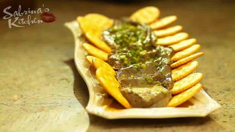

- RECIPES
- EPISODE GUIDE
MORE FROM THE SHOW

SABRINA'S SECRET-NO-MORE- CHICKEN LIVER PATE WITH BROWNED BUTTER
Here's how to make the dish
- In a pan, saute in olive oil garlic, chicken livers and cinnamon. Add salt and pepper to taste.
- Once liver is pink inside (this should only take about 15 minutes) turn off heat.
- Transfer all in blender. Add cream, rhum, sugar and blend till all ingredients turn into a fine paste. Add olive oil if too thick. Blend in crushed biscuits if too soupy. Remove from blender and pour onto a nice serving dish. make wave-like patterns with a spoon keeping slightly lower the center than the sides.
- In pan, melt a fourth cup of butter. Pour over pate.
- Sprinkle garnish. Then chill! Best served with biscuits or crackers on the side.
From my kitchen to yours with love, Mwahhh! -S
Ingredients:
- 1/2 kilo chicken liver (soaked overnight in ref with milk)
- 1 teaspoon cinammon
- 1/4 cup olive oil
- 6 caps of rhum
- 1/4 cup garlic
- 3 tablespoon brown sugar
- 1/2 cup cream
- 1/2 stick of butter
- salt pepper to taste
- a palm full of chopped leeks or parsley (optional)